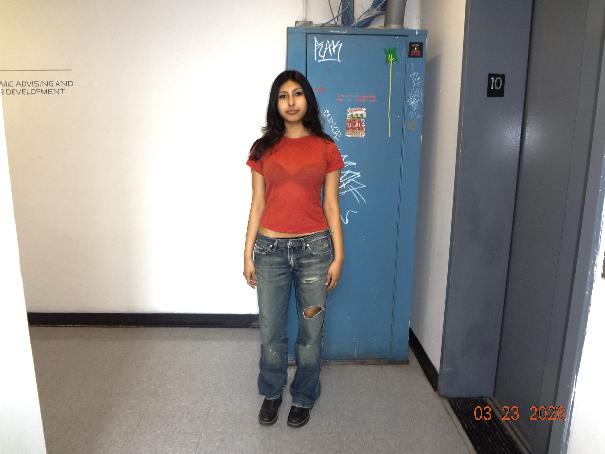

archive: students around parsons
about
lookbook
this is an archive style website on the different outfits Parsons sophomore students wear. This archive felt more personal, the people featured are people I know or got to know this year!
